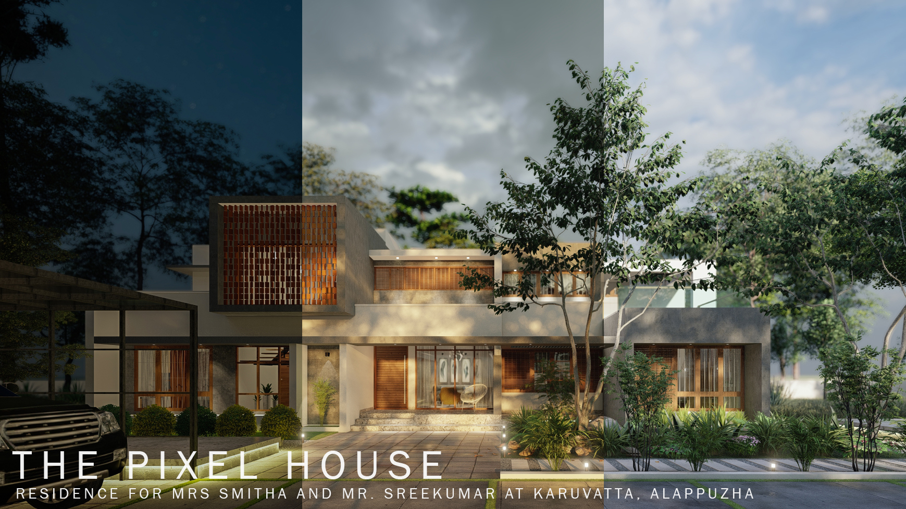
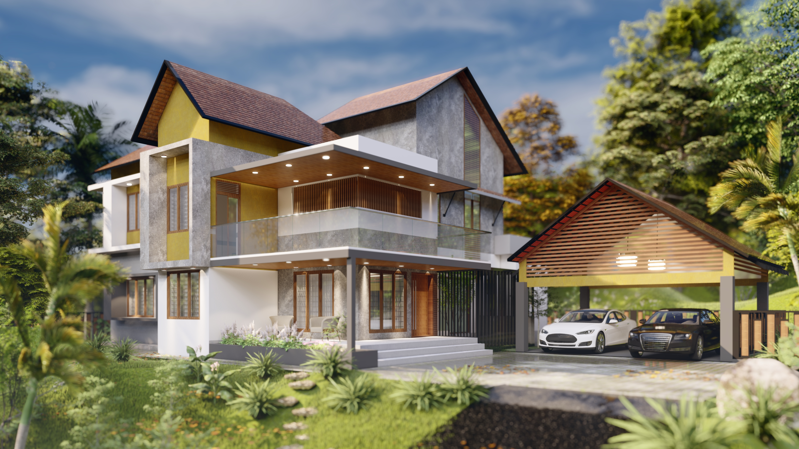

SELECTED WORK · ARCHITECTURAL DESIGN
Architectural
Projects
A selection of residential architectural projects developed across concept, spatial planning, technical documentation and visualisation.

RESIDENTIAL · PROFESSIONAL WORK
Pixel House
A 3,244 sq. ft. residence in Alappuzha, Kerala, developed around massing, spatial organisation, climatic considerations and the relationship between the new house and an existing building.
View project →
RESIDENTIAL · ARCHITECTURAL DESIGN
Sylvia
A 2,900 sq. ft. residence positioned on a high-contour site surrounded by rubber plantations, developed with a contemporary multi-box form, generous openings and climate-responsive spaces.
View project →